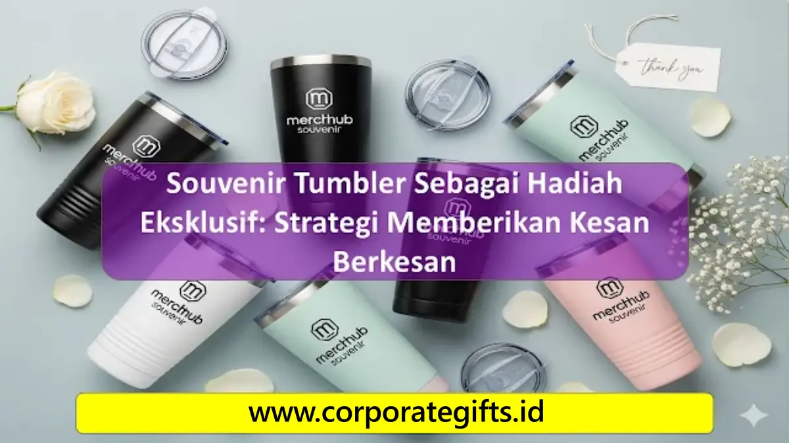

Daya Tarik Tumbler Custom sebagai Hadiah Eksklusif
Corporate Gifts ID - Memberikan hadiah yang fungsional sekaligus berkelas merupakan strategi utama dalam mempererat hubungan kemitraan bisnis maupun perayaan momen pribadi. Di antara berbagai opsi cinderamata, souvenir tumbler custom menempati posisi teratas sebagai pilihan hadiah paling diminati karena menggabungkan nilai kepraktisan harian dengan sentuhan personal yang prestisius.
Tumbler bukan sekadar wadah penyimpan air minum biasa. Saat dihadirkan dalam balutan material premium dan dikustomisasi dengan logo perusahaan atau ukiran nama penerima, tumbler bertransformasi menjadi representasi gaya hidup modern, kepedulian terhadap kesehatan, serta komitmen terhadap kelestarian lingkungan.
5 Keunggulan Utama Tumbler Dibanding Hadiah Lain
Mengapa tumbler menjadi instrumen gifting yang sangat efektif bagi perusahaan dan individu?
- Fungsionalitas Sepanjang Hari: Digunakan untuk menyeduh teh hangat di pagi hari atau menyimpan air es segar di siang hari, memastikan hadiah terus dipakai secara berkelanjutan.
- Memberikan Kesan Mewah dan Berkelas: Material stainless steel bertekstur powder coat matte atau kaca borosilikat tebal memancarkan aura eksklusivitas yang elegan.
- Fleksibilitas Personalisasi: Sangat mudah disematkan identitas visual brand, monogram inisial nama, atau kutipan inspiratif lewat teknik cetak modern.
- Meningkatkan Brand Exposure: Tumbler yang dibawa ke ruang rapat, kafe, atau meja kerja rekan kerja memberikan paparan merek (brand visibility) organik tanpa henti.
- Dukungan Gaya Hidup Ramah Lingkungan: Mendorong pengurangan sampah botol plastik sekali pakai selaras dengan prinsip keberlanjutan global.

Pilihan material stainless steel vacuum insulated dengan teknik laser grafir permanen dan kemasan rigid box.
Tips Memilih Tumbler Eksklusif Sesuai Kebutuhan
Agar hadiah memberikan dampak maksimal bagi penerimanya, perhatikan beberapa faktor penting berikut saat memilih:
- Pilih Material Food Grade Berkualitas: Pastikan menggunakan stainless steel tipe SUS 304 food-grade atau kaca borosilikat yang aman dari zat kimia berbahaya (100% BPA Free).
- Kapasitas yang Ergonomis: Ukuran volume antara 400 ml hingga 500 ml adalah standar ideal karena nyaman digenggam dan muat diletakkan pada cup holder mobil.
- Teknik Cetak Presisi: Gunakan teknik laser engraving untuk menghasilkan ukiran logam permanen anti-luntur, atau UV print beresolusi tinggi untuk logo berwarna warni.
Tabel Komparasi Material dan Karakteristik Tumbler
Panduan memilih material tumbler berdasarkan spesifikasi teknis dan peruntukannya:
| Tipe Material | Keunggulan Utama | Teknik Kustomisasi Rekomendasi | Peruntukan Momentum Acara |
|---|---|---|---|
| Stainless Steel SUS 304 | Tahan panas dan dingin hingga 12-24 jam | Laser Engraving / Etsa Permanen | Corporate Gift Eksekutif, VIP Nasabah |
| Kaca Borosilikat | Bebas bau minuman, transparan estetis | Sablon Presisi / UV Print Khusus Kaca | Souvenir Pernikahan Mewah, Event Beauty |
| Smart LED Temperature | Display digital indikator suhu cairan di tutup | Laser Grafir Monokrom Minimalis | Kickoff Meeting Q2, Onboarding Kit Kantor |
| Eco Bamboo Layer | Sentuhan alami kayu bambu ramah lingkungan | Wood Engraving Halus Minimalis | Kampanye ESG, Workshop Lingkungan BUMN |
Packaging dan Presentasi yang Meningkatkan Nilai Kemewahan
Kesan mewah sebuah hadiah berawal dari kemasannya. Menghadirkan tumbler dalam hardbox kaku berlapis kertas bertekstur, dilengkapi busa eva cut pengunci botol, pita penarik elegan, serta kartu ucapan terima kasih personal akan menciptakan pengalaman unboxing yang tak terlupakan bagi penerima.
Kesimpulan Praktis
Souvenir tumbler membuktikan dirinya sebagai media hadiah eksklusif yang memadukan fungsi jangka panjang, keindahan estetika, dan efektivitas branding. Baik untuk memperingati pencapaian perusahaan, menyambut klien VIP, maupun cinderamata perayaan penting, tumbler custom berkualitas tinggi senantiasa menjadi pilihan yang tepat sasaran.
Konsultasikan kebutuhan tumbler custom perusahaan Anda bersama CorporateGifts.ID. Dapatkan simulasi mockup desain 3D gratis dan penawaran harga terbaik melalui formulir permintaan penawaran resmi (RFQ) atau jelajahi koleksi pada kategori Souvenir Kantor kami.
Pertanyaan yang Sering Diajukan (FAQ)

Ditulis oleh: Sholikhatun Nikmah
Merchandise Production & Print SpecialistSpesialis teknik manufaktur merchandise, teknologi sablon industri, dan penjaminan mutu cetak souvenir instansi di CorporateGifts.ID.
Lihat Profil Lengkap & Panduan Lainnya